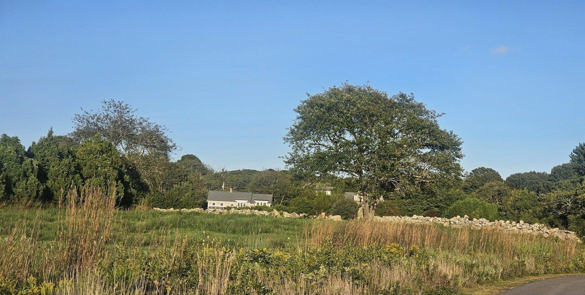
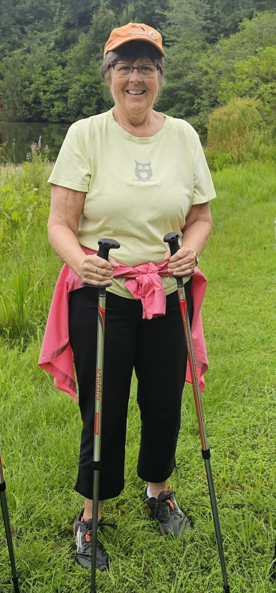

Strength and Fitness
Education and fitness for a healthy today and an independent tomorrow

Do you worry about falling? I do.
It is so easy to trip or lose your balance. I'm 74 years-old and have successfully worked as a fitness instructor and personal trainer for older adults for the past 18 years. I understand your concerns and needs. I’ll help you improve your balance as well as your posture and gait.
No pills. No tricks. No serums. Just strategies, exercises and improvements.
Join me for a three-month, small group class that will build your confidence and help you maintain your lifestyle.
Julie Gooding is available at 401.742.4553 or healthyfuturesnow.com

Strength and Fitness
A one-hour individual or small group class to improve your balance as well as your posture and gait. No pills. No tricks. No serums. Just strategies, exercises and improvements. Look better, feel better, regain your confidence. 3-month class.
Personal Training
One-hour, individual session that addresses any areas of weakness while enhancing strengths to promote progression and avoid a plateau. Personal Training sessions draw from three classes outlined above to improve overall fitness including agility, neuro-muscular connection, and reaction time to prevent falls and boost performance. Special focus on feet, ankles, wrists and hands available.
Individual training also available at LaGrua and at Forget me Not.
Who am I?
I am a personal trainer certified through the American Council on Exercise, specializing in working with older adults. My clients range in age from 70 to 93 years old. Many of them had been recovering from surgery or illness or managing chronic diseases. Through strength training and stretching, they have improved their quality of life and now enjoy greater health and independence.
After undergoing hip and knee replacement surgeries within a 10 month period, I found myself struggling with the same issues my clients face: loss of strength, balance, and endurance. While searching for resources, I came across the Urban Poling, Inc. website. Having already tried other walking poles, I was impressed by their unique Activator poles. I became certified as a UPI instructor and am passionate about Nordic Walking. I keep poles and hiking shoes in my car, ready to hike at any time!